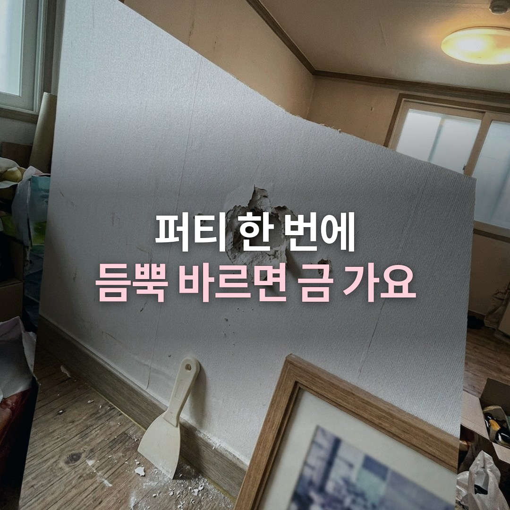
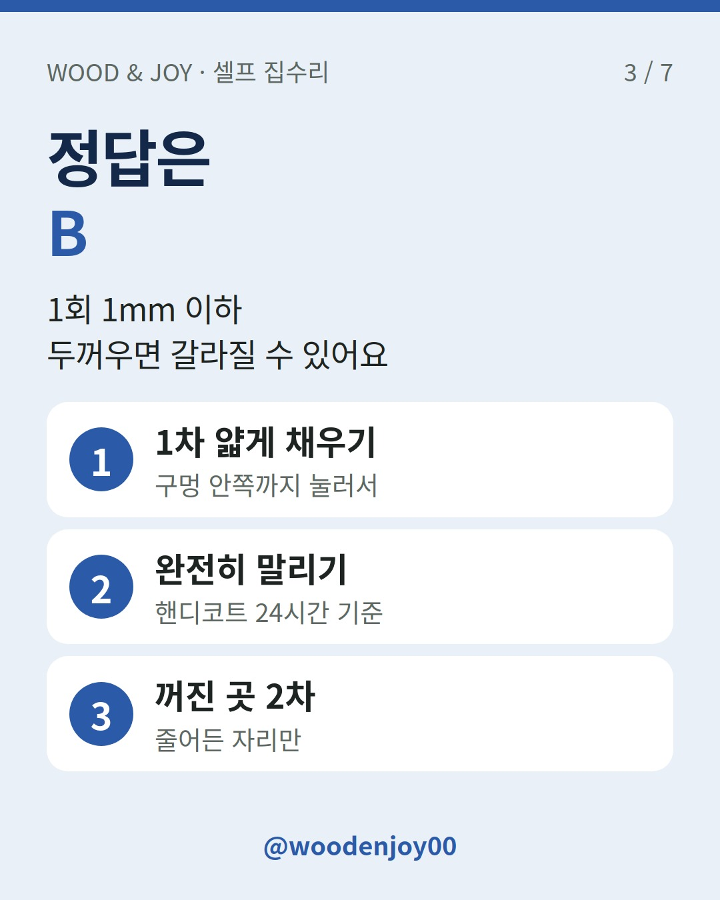

액자 떼고 남은 벽 구멍에 퍼티를 꾹꾹 채웠는데 다음 날 금이 가 있었다면, 두께가 문제였을 수 있어요.
한 줄 결론: 퍼티는 한 번에 1mm 이하로 얇게 바르고, 다 마르면 한 번 더 발라요. 손바닥만 한 구멍은 월패치부터 붙여요. (핸디코트 제조사 자료 기준)

퍼티는 마르면서 조금 줄어들어요. 핸디코트 제조사는 한 번 바를 때 두께가 1mm를 넘지 않게 하고, 두껍게 메워야 하면 여러 번에 나눠 바르라고 안내해요. 한 번에 두껍게 바르면 크랙(갈라짐)이 생길 수 있다는 주의도 같이 적혀 있어요.

쇼핑몰에서 '퍼티 빠데 메꾸미', '월패치 석고보드 보수'로 찾으면 나와요.
| 구멍 크기 | 살 것 (쇼핑몰 이름) | 하는 법 |
|---|---|---|
| 못자국·나사 구멍 | 벽 보수 퍼티(빠데, 메꾸미) | 헤라로 눌러 채우고 얇게 펴기 |
| 등·에어컨 구멍 같은 석고보드 구멍 | 월패치 5·10·15·20cm + 퍼티 | 패치 붙이고 퍼티로 덮기 |
| 주먹 크기 이상 | 보수용 메쉬 테이프 + 퍼티 | 구멍보다 넓게 붙이고 바르기 |
| 벽이 크게 부서짐 | 직접 하지 않기 | 전문가 진단 |
2026년 11월 기준 온라인 판매가는 내부용 보수 퍼티 400g이 2,970원, 월패치 10cm가 1,450원 정도예요(판매처마다 달라요).
셀프/업체 경계: 못자국부터 손바닥만 한 구멍까지는 셀프로 할 만해요. 벽이 크게 부서졌거나 안전이 걱정되면 업체에 맡기세요.
제조사는 작업을 마친 뒤 3일 안에 사포질하면 잘 갈린다고 안내해요. 실내 벽은 내부용을 쓰세요. 외부용은 마르면 아주 단단해져서 손으로 사포질하기 힘들어요.
핸디코트 제조사는 작업하는 동안 대기 온도를 5℃ 이상으로 유지하라고 해요. 다 마르기 전에 5℃ 밑으로 떨어지면 잘 붙지 않거나 표면에 문제가 생길 수 있대요.
창가 벽을 손보는 김에 바람 새는 곳도 보고 싶다면 문풍지 사기 전에, 향 하나로 바람 들어오는 틈부터 찾으세요를 참고하세요.
사기 전·하기 전 체크리스트
Q. 퍼티 바르고 바로 페인트칠해도 돼요?
A. 속까지 마른 뒤에 칠하세요. 제조사 자료를 보면 덜 마른 상태에서 칠하면 색이 얼룩질 수 있다고 해요.
Q. 나무 방문에 난 나사 구멍도 퍼티로 메워요?
A. 나사를 다시 박을 구멍이라면 퍼티 말고 목공 본드와 나무로 메우는 게 맞아요. 방법은 방문경첩 나사 헛돌 때, 구멍 꽉 채우고 본드 굳히면 안 들어가요에 있어요.
여러분 집 구멍은 못자국인가요, 손바닥만 한 구멍인가요? 댓글에 크기를 적어 주시면 맞는 재료를 알려 드릴게요.